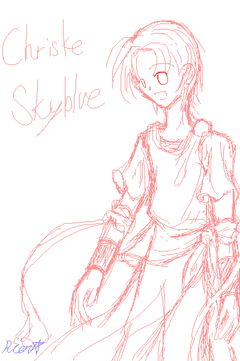
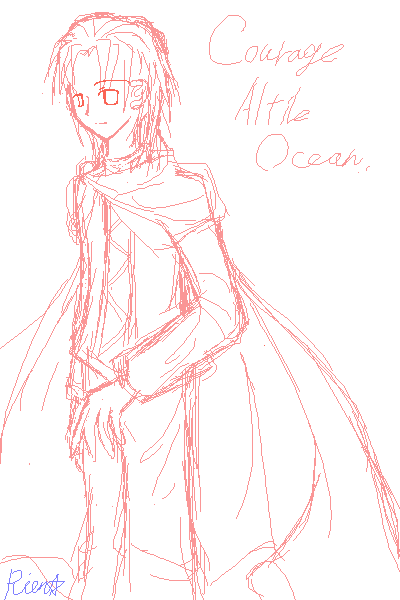

好き勝手なお遊びページ。
気が向いたら更新されてたり、消されてたり。
サイトに載せるまでも無い、細々としたものを置いたりおふざけしたりするページ（笑。
らくがきだったりキャラの裏設定だったり。更新したらブログあたりで呟きます。
今回のテーマ。
更新２回目
・擬人化設定の馬鹿野郎・
四勇者の擬人化設定でいっぱいいっぱいなのですが、
時間が出来たらマリストペパマリメテオスの擬人化設定を作りたくて仕方がありません。
描いてみたけど、下書き時点でボツにした絵を乗っけてみる。
…大きすぎたよorz
多分、四勇者キャラ設定に今のせてる絵（クリスケだけですが；）は、
ちょっと気にくわないので近々描きなおします；；

左頬の傷の位置がおかしいorz
この人は無駄に布が多いので描くと混乱します…；
足の前の布、本当は透けてません。足のライン消し忘れただけです；
身長１５８cmという設定。
と安易に決めたは良いものの、ちょっと１４歳にしては大きすぎたのでは無いか？と思う今日この頃。
クリボーだからチビにしたかったのになぁ；
カーレッジとの身長差１５cmくらいにしたかったのですよー；あまりに差が有りすぎるとアレなので。
（本当はカーレッジの身長も１７５以上が良かったのに、その辺を考えて縮めたという裏設定。きっとまだ成長期だったんです）
…まあ、大抵はカーレッジと並べて描くと身長差が狂ってるんですがね；
水色のシャツ＋一枚布を普段はつけてます。ウエストの部分で、もう一枚の布でしばってる んだ と 思う。
描くのは省略する事が多いですが、体の後ろにもあのひらひら布があるんですよー。（ひらひら布＝ウエストの下の長い奴）
肩の留め金は、一枚布がずれない様にあるのですが、何で両肩に無いのか自分でも分からな（以下略。
千年前＝古代＝ギリシャら辺、という管理人の偏った知識のおかげで、
オーシャル・アリウスの住民たちはギリシャ風味の服を着てます。あくまで風味。
クリスケも履いてるのはサンダル、色は焦げ茶色。
地味に、クリスケの擬人化した時の色とかは原型と合わせてるんですが、分かりますかね？；
（髪＝茶色＝クリボーの顔
ズボン＝うす茶＝クリボーの…ど、胴体？；なのか？
靴、手首のアレ＝焦げ茶色＝クリボーの足ってこんな色でしたよね）

未だに後姿や横からみた姿が、この人はどんなんなのか良く分からない。
そして余裕でアルタイルの綴りを間違えている罠。orz（Altile→Altair）
身長１７３cm設定。本当はもっと大きくしたかったんだよ！；
この人の擬人化案は原版の頃からありました。キノピオは服着てるから連想がしやすかったのかな？
おかげでクリスケとの差が結構大きいorz ギリシャじゃないじゃん。
王様の着るような服って、きっともっと色々豪華なんだろうと思いますが、調べてません（…）
…いや、マリオ界だしね？ピーチ姫のドレスだってシンプルイズベストだしね？（言い訳）
マントは管理人の趣味です。（でーん）
星流描くの省略してますが、本当はあります。実は未だに星流のデザインが決定していないというorz
……剣って難しくないですか？；
本当は腰にさしてるんでしょうけど、どんな風に描けば良いんだか未だに良く分かりません。（泣
ちなみに、プロローグでカゲの女王に（妨害電波横断中）される前は、額に王冠もあったんですよー。
現在は色んな理由があって無いですけれども。
ちなみに彼も、擬人化したときの色はキノピオの基本色と合わせてあります。
服の青、ズボンの白と言った感じで。
…え？髪？
いやほら、キノピオ族って結構バリエーションありますし、
緑のキノピオでも茶色の髪とかも確かゲーム中でいましたし、赤キノピオでも黒髪で良いじゃないですか（…
それはともかく、黒髪＋黒背景は軽く地獄を見ます。ぎゃふん。
…残りの勇者とか、勇者ノコノコとテレサの設定画を描きたいのに時間が無いorz
描けたらＵＰしようかなー…。